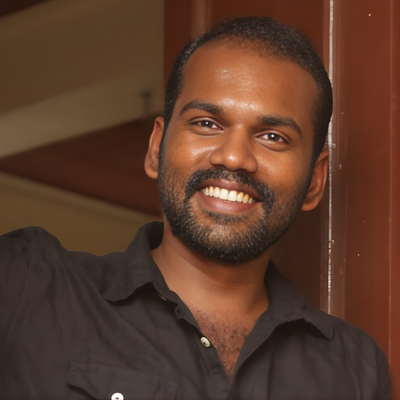
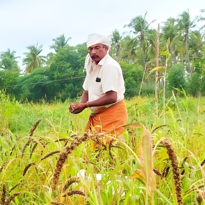
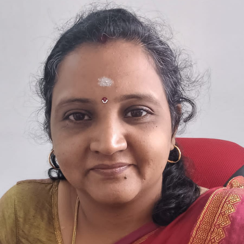

About VEFS Foundation
From Seed to Soil: Reviving Tamil Heritage, Nurturing Sustainable Futures
Our Story
The story of VEFS Foundation began with R. Vetrimaran's transformative journey under the guidance of Nammalvar Ayya, the legendary pioneer of ecological agriculture in Tamil Nadu. Having witnessed the devastating effects of chemical farming on soil health, farmer livelihoods, and traditional knowledge systems, Vetrimaran recognized an urgent need for change. At Valluvam Pannai in Kulathupatti, Nilakottai, he established the Valluvam Ecological Farming and Social welfare foundation with a clear purpose: to revive the wisdom of our ancestors while building a sustainable future. The foundation was born from a simple yet powerful question—"Do we truly know what good food is?"—and a determination to help farmers and communities rediscover the answer through organic practices rooted in Tamil Nadu's rich agricultural heritage.
What started as training sessions for local farmers has grown into a comprehensive movement touching every aspect of sustainable agriculture. Drawing on over a decade of hands-on experience, the foundation developed programs that empower farmers from production to marketing—breaking their dependence on middlemen and chemical inputs. A weekly organic market now connects farmers directly with consumers, ensuring fair returns and access to truly organic produce. The foundation expanded its reach through partnerships with schools and colleges, conducting eco-education programs, trekking expeditions, and competitions that have inspired a new generation to connect with nature. Having trained over 200 farmers to transition from chemical-based to natural farming, VEFS has become a trusted name in Tamil Nadu's organic farming community.
Today, VEFS Foundation works at the intersection of ecological conservation, farmer empowerment, and traditional knowledge preservation. The landmark Pond Restoration and Biodiversity Project at Senghataan Kulam, Batlagundu, exemplifies our holistic approach—reviving traditional water systems while creating biodiversity-rich habitats. Our research into Sangha Ilakiya Maranghal (trees mentioned in ancient Tamil Sangam literature) represents a unique effort to document and preserve indigenous species that shaped our ancestors' lives. Looking ahead, we envision establishing a permanent eco-learning center, restoring three major ponds in the region, and developing community biodiversity gardens featuring these heritage trees. Our ultimate goal is a Tamil Nadu where farmers thrive on their own terms, consumers access poison-free food, and the ecological wisdom of our ancestors flourishes once again.
Our Vision
To create a harmonious world where ecological farming thrives, biodiversity is protected, and communities live with dignity, care, and sustainability.
Our Mission
To drive sustainable change through ecological farming, biodiversity conservation, and social welfare, fostering harmony between nature and society.
Our Values
- Ecological Conservation
- Community Empowerment
- Sustainable Practices
Our Work Since 2019
🌾 Farmer Training & Empowerment
- ✓ Trained 300+ farmers annually in natural farming and organic practices
- ✓ Enabled native seed preservation and organic input preparation
- ✓ Established weekly organic market connecting farmers directly with consumers
🌳 Ecological Conservation
- ✓ Planted and conserved 250+ indigenous trees across Tamil Nadu
- ✓ Launched Pond Restoration and Biodiversity Project at Senghataan Kulam, Batlagundu
- ✓ Researched Sangha Ilakiya Maranghal — documenting indigenous species from ancient Tamil Sangam literature
🌿 Sustainable Living & Awareness
- ✓ Launched the Know Your Food awareness program for families
- ✓ Promoted terrace gardens and chemical-free living practices
- ✓ Built awareness on healthy, sustainable food choices across communities
🤝 Community & Youth Engagement
- ✓ Built a community of 26,000+ members committed to ecological change
- ✓ Partnered with schools and colleges for eco-education programs and trekking expeditions
- ✓ Organized competitions and campaigns inspiring youth to connect with nature
Our Journey
Milestones in our conservation movement
Meet Our Founder

R. Vetrimaran (வெற்றிமாறன் .இரா)
Founder & President, VEFS Foundation
Personal Appointment: +91 9566667708
R. Vetrimaran is the Founder and President of VEFS Foundation—a visionary committed to ecological farming, biodiversity conservation, and community empowerment. Shaped by the teachings of Nammalvar Ayya, a pioneer in natural farming and social activism, Vetrimaran has dedicated his life to reviving sustainable agricultural practices and fostering a harmonious relationship between people and the earth.
With over a decade of hands-on experience, he has trained 300+ farmers annually in natural farming, native seed preservation, and organic input preparation. His work spans terrace gardening initiatives, the Know Your Food awareness program, and large-scale ecological restoration—including the planting and conservation of 250+ indigenous trees with a long-term vision to restore 160 acres of land. He has built a community of 26,000+ individuals committed to ecological and social change.
Through VEFS, Vetrimaran is creating farmer-centric platforms for marketing organic produce, advancing biodiversity protection, and expanding VEFS's reach from Dindigul to across Tamil Nadu. His goal is to grow the movement to 1 Lakh+ members and bring sustainable living into every home by 2027—turning awareness into lasting action for a compassionate and sustainable future.
"Farming is a living expression of our culture and our connection to the earth. When we grow with respect for nature, we cultivate not just food, but a sustainable future. Through conscious practices and shared knowledge, we can restore balance and create a way of life that nurtures both people and the planet."
Board of Trustees
Experienced leaders guiding our mission

K. Rajasekaran
Secretary, VEFS Foundation
K. Rajasekaran serves as the Secretary of VEFS Foundation, bringing valuable expertise in organizational management and community development. His dedication to environmental conservation and agricultural sustainability strengthens the foundation's mission to empower farmers and preserve indigenous ecological heritage across Tamil Nadu.

S. Prajana
Treasurer, VEFS Foundation
S. Prajana serves as the Treasurer of VEFS Foundation, overseeing financial operations and ensuring transparent resource management. Her commitment to fiscal responsibility and sustainable development supports the foundation's initiatives in organic farming education, indigenous tree conservation, and community empowerment programs.
Join Our Mission
Whether you're a student, farmer, professional, or nature enthusiast, there's a place for you in the VEFS community. Together, we can restore our ecological heritage and create a sustainable future.